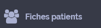

Pologne (Polonais)
Présentation
Dzien dobry,jestem pielegniarka Bede uzywala telefon,zeby tlumaczyc, zgadza sie
Pielęgniarka
Doktor
Ratownik pierwszej pomocy
Wolontariusz
Reprezentant obsługi klienta
Student medycyny
Położna
Sekretarka
Personel pielęgniarski
Identité
Czy możesz pokazać mi swój paszport?
Czy mógłbym/mogłabym zobaczyć dowód osobisty?
Czy mógłbym/mogłabym zobaczyć dokumenty z twoim imieniem?
Czy masz Europejską kartę zdrowia?
Czy masz prywatne ubezpieczenie? Czy masz je ze sobą?
Koszt opieki nie będzie pokryty przez ubezpieczenie i będziesz musiał zapłacić całą sumę.
Koszt opieki nie będzie pokryty przez ubezpieczenie i będziesz musiał zapłacić całą sumę.
Z jakiego kraju pochodzisz?
Jaki jest twój obecny adres?
Masz numer telefonu, na który mogę się z Tobą kontaktować?
Attente
Proszę czekać
na krzesłach
na ławce
w poczekalni
Przyjedziemy i Cię odbierzemy.
Nie można jeść, pić i palić w poczekalni.
Twoja rodzina musi tu poczekać.
Zależnie od Twojego stanu zdrowia, doktor może zadawać dodatkowe pytania np.
o testy krwi, radiografie, skany lub poprosić o pozpostanie na obserwację
Prosimy Cię o powstrzymanie się od jedzenia i picia, gdyż niektóre
badania wymagają bycia na czczo.
Musisz poczekać godzinę na otrzymanie wyników badań krwi.
Accueil
Co się Panu stało?
Czy boli coś Pana?
Tak
nie
Proszę pokazać gdzie Pana boli.
Zamierzam Pana zbadać
W skali od jeden do dzieisięciu, proszę opisać swój ból
10, ból jest nieznośny
zero
jeden
dwa
trzy
cztery
pięć
sześć
siedem
osiem
dziewięć
dziesięć
Czy może się Pan rozebrać, abym mógł Pana zbadać?
Może Pan pozostać w bieliźnie.
Może Pan usiąść na krześle,
Może się Pan położyć na macie.
Może się Pan położyć na noszach.
Neurologie
Czy stracił Pan przytomność?
Czy wie Pan jaki mamy dzień?
Czy wie Pan gdzie się znajduje?
Proszę podążać za moim palcem.
Czy może Pan poruszać dłońmi i stopami?
Dotknę Pana dłoni i stóp. Czy czuje Pan to?
Prosze patrzyć mi w oczy.
Czy ma Pan mrowienie? Prosze mi pokazać gdzie
Prosze napierać na moje dłonie.
Proszę otworzyć oczy.
Prosze otworzyć usta.
Proszę podnieść prawe ramie.
Czy ma Pan ból głowy?
Ból pojawił się:
stopniowo
nagle
Czy boli Pana w szyi?
Czy podróżował Pan w ciągu ostatnich kilku miesięcy?
Czy odbywał Pan dalekie podróże(za morze)?
Czy jest Pan wrażliwy na światło?
Czy hałas Panu przeszkadza?
Nakłuję panu koniec palca w celu sprawdzenia poziomu cukru we krwi.
Pneumologie
Położę Panu rękę na brzuchu w celu sprawdzenia oddechu. Proszę oddychać normalnie i nie mówić.
Czy ma Pan problemy z oddychaniem?/krótki oddech?
Weź głęboki wdech i wstrzymaj go.
Oddychaj normalnie.
Oddychaj głęboko.
Pali Pan?
Czy jest Pan astmatykiem?
Czy brał Pan leki na astmę?
Czy wdychał Pan jakiś dym?
Czy mógłby Pan wydmuchać nos, zebym mógł go zbadać?
Cardiologie
Proszę opisać ból.
Czy czuje Pan ostry ból?
Czy czuje Pan ostry ból?
Czy czuje Pan piekący ból?
Czy bol jest promieniujacy?Prosze pokazac w ktora strone
Od kiedy czuje( Pani,Pan) ten bol?
minuty
godziny
dni
Zmierze puls
Lekko nacisne paznokiec
Zmierze cisnienie
Czuje (Pani,Pan) palpitacje?
Prosze otworzyc buzie i podniesc jezyk-podam lek
Czy czujesz ulge po tym leku?
Czy pijesz alkohol?
Czy jestes cukrzykiem?
Czy masz podwyzszony cholesterol?
Zrobie pomiary bicia serca, to nie jest bolesne, prosze sie nie ruszac
Malaise
Czy czules jak bol nadchodzi?
Co czules podczas zaslabniecia?
mrowienie
Zawroty glowy
Zmeczenie
Masz zawroty glowy?
Czy bol jest promieniujacy ?Prosze okazac w ktora strone?
W ktorym miejscu odczuwasz bol?
Ile czasu trwal bol, zaslabniecie?
Czy popusciles mocz?
Ugryzles sie w jezyk?Prosze otworzyc buzie.
Czy krzyczales podczas konwulsji?
Czy jedles cos dzisiaj?
Digestif
Prosze pokazac gdzie boli?
Czy bol jest promieniujacy?Prosze pokazac w ktora strone.
Czy w ostatnim czasie schludles?
Podczas oddawania moczu czujesz pieczenie?
Czy w moczu pojawila sie krew?
Kiedy byla ostatnia miesiaczka?
Jestes w ciazy?
Kiedy ostatni raz oddals mocz?
Czy masz zatwazdzenia?
Od kiedy?
Czy masz nudnosci?
Czy masz biegunke?
Czy wymiotowales?
Czy w stolcu pojawila sie krew?
Czy masz gazy?
Musze zbadac odbyt-zgadzasz sie?
Do tego pojemnika prosze oddac mocz do analizy.
Prosze podmyc sie przed oddaniem moczu.
Infectieux
Czy byles ukaszony lub pogryziony?
Prosze pokazac w ktorym miejscu.
W ktorym miejscu pojawily sie pierwsze pryszcze?
Od jakiego czasu noga jest zaczerwieniona?
Czy to swedzi?
Musisz zostac w izolatce.
Prosze nosic maske.
Czy zabezpieczales sie podczas stosunku?
Zmierze Ci temperature.
Ophtalmologie
Czy widzisz metnie?
Czy widzisz podwojnie?
Czy masz bole glowy?
Czy wydaje Ci sie, ze pokoj wiruje?
Czy ostatnio uderzono Cie w glowe?
Antécédents
Czy chorujesz na cukrzyce lub nadcisnienie?
Czy w ostatnim czasie lezales w szpitalu?
Czy bierzesz leki?(Jakie?)
Czy masz recepte na leki ,ktore bierzesz?
Czy jestes alergikiem?( Na co jestes uczulony?)
Jakie byly choroby w rodzinie?
Pédiatrie
Czy dziecko schudlo? ile kilogramow?
Czy dziecko jest na biezaco ze szczepionkami?
Czy bracia i siostry choruja?
Czy ma apetyt?
Czy wymiotowalo dziecko?
Czy jest bardziej ruchliwe niz zwykle?
Czy jest bardziej zmeczone niz zwykle?
Czy ma biegunke?
Gynécologie
Jestes w ciazy?
W ktorym tygodniu jestes w ciazy?
Czy miesiaczkujesz?
Czy leciala Ci krew?
Jakiego koloru byla krew -czerwona czy czarna?
Czy byly problemy w poprzedniej ciazy?
Czy masz bole porodowe?
Czy zgubilas wode?
Czy odczuwsz ruchy dziecka?
Czy zazywasz (uzywasz) srodki antykoncepcyjne?
Musze Cie zbadac ginekologicznie.Prosze sie polozyc.
Prosze sciagnac bielizne
Traumatologie
Czy wyrzucilo Cie z samochodu?
Z jaka predkoscia jechales,
Czy miales kask?
Czy miales zamkniete pasy?
Czy spadles?
Z jakiej wysokosci spadles?
Czy bierzesz leki przeciwko krzepnieciu krwi?
Zaloze usztywniacz,zeby chonic kregoslup
Musze urzyc plyn odkazajacy rane.
Musze zasyc rane.
Musze zalozyc opatrunek.
Znieczule wokol rany.
Prosze nie ruszac sie.
Musze zalozyc gips.
Musisz byc operowany.
Examens
Musisz miec:
Musze zrobic:(Musze zalozyc)
Kropkowke
Pobrac krew.
Opatrunek
Zastrzyk
Umyc Cie.
Scaner
Zdjecie rentgenowskie
Gips
Ultrasonografie
Operacje
Dzisiaj
Jutro
Musisz wziac prysznic z szamponem.
Badanie nie boli.
Po operacji bedziesz mial:
Sonde moczowa.
Sonde gastryczna
Dren
Blizna
Prosze zdjac cala bizuterie i kolczyki
Prosze zmyc lakier do paznokci
Prosze wyjac protezy zebowe i sluchowe
Prosze powiedziec czy masz
Masz rozrusznik
Zastawki sercowe
Sten
Proteze
Zaciski miedzyczaszkowe
Wszczep slimakowy(lyzeczkowy)
implant soczewki wewnątrzgałkowej
Metal w ciele
Defibrylator
Pokoj wszczepienny
Czy karmi pani piersia?
Czu mozesz usiasc?
Czy mozesz wstac?
Czy mozesz chodzic?
Traitements et consignes
Przypisuje Ci:
Leki
Przeciwbolowe
Antybiotyki
Nie powinieneś pić.
Nie powinno sie jesc
Nie wolno wstawac.
Prsze lezec na plecach
Nie wolno palic papierosow.
Prosze tu nacisnac ,zeby nas wezwac.
Tutaj wlaczamy i wylaczamy swiatlo
Tutaj jest toaleta
Tutaj jest lazienka.
Tutaj jest Twoj pokoj
Conclusion
Jest złamanie
Nie ma rachunku
Musisz byc operowany
Prosze przyjsc jutro rano
Prosze przyjsc w:
Wyciagnac szwy.
Zalozyc gips
Musisz nosic usztywniacz
Mozesz wrocic do siebie.
Musisz isc do szpitala.
Musisz zostac w szpitalu.
Przenosimy Cie na inny oddzial